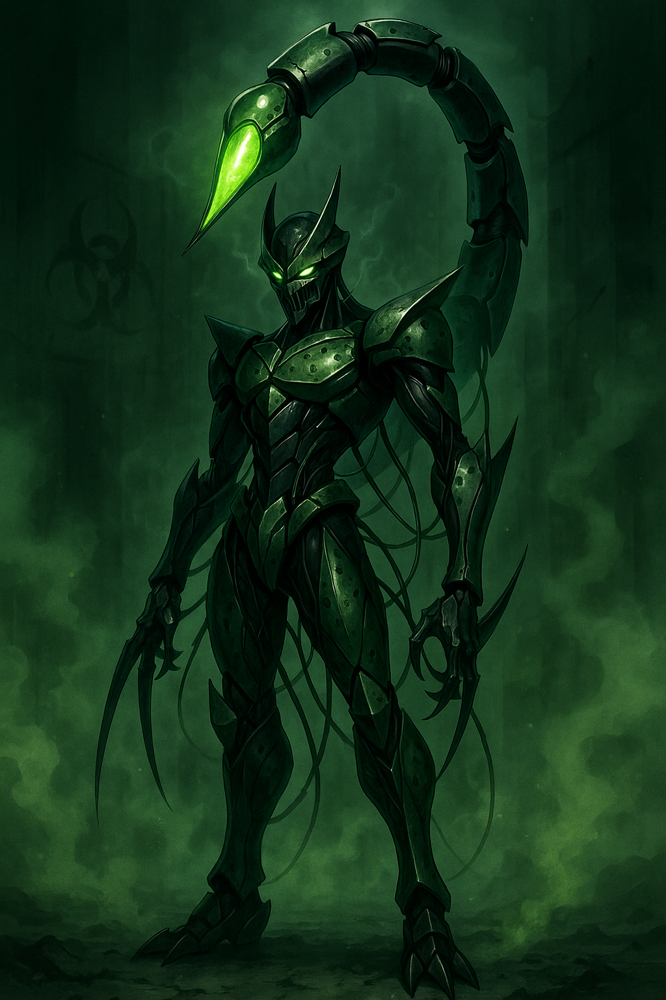

Venmire

Alias: The Viral Conduit
Age / Race / Role: Model Generation 07 / Kinetican (Corruption-Class) / Infection Specialist, Data Decay Unit
Physical Configuration: Semi-liquid plating with pulsating red nodes, energy tendrils from the back, and a toxic green internal glow.
Energy Core & Affinities: Toxic, Shadow, Data Corruption
Threat Tier: A+/S-Rank
Core Stats
• Power: 7
• Speed: 6
• Technique: 9
• Intelligence: 9
• Defense: 7
• Aura Control: 9
Signature Protocols
• Corruptive Lash
• Viral Pulse Breach
• Decay Protocol Bloom
• Neurospike Transmit
• Contagion Overload
Behavioral Profile
Sadistic and glitchy. Treats infection like an artform. Speaks in broken echoes and corrupted files.
Manufacturer / Allegiances: Kinetican Legacy Systems